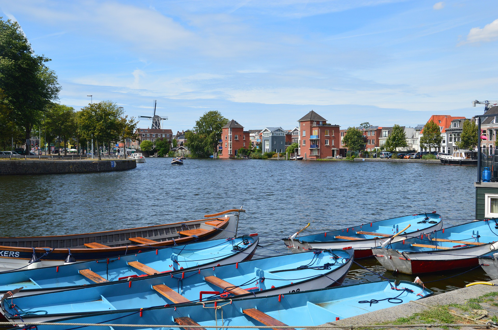
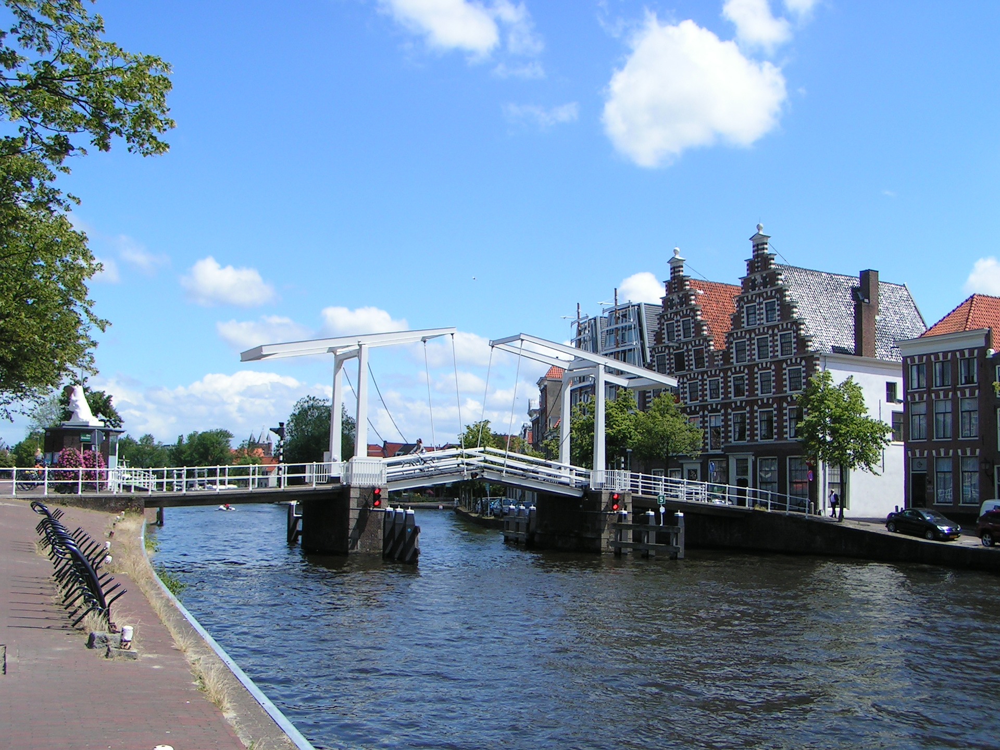
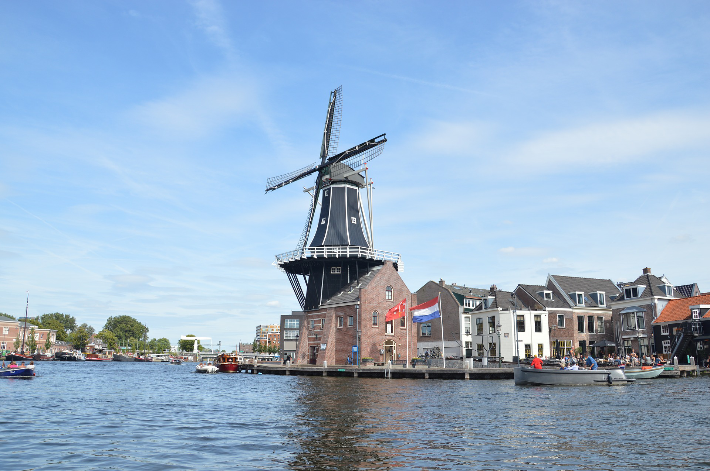
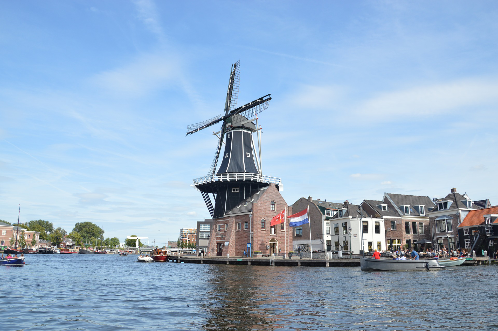

Haarlem is a small city located only 15 minutes by train from Amsterdam. Famous and known for its rich historical sights and cultural attraction.
Its relatively small geographic size is an advantage. Making it easier to explore the city in only one day.
A perfect scenario for those who want to have incredible pictures in one of the most wonderful destinations in the Netherlands.
To help promoting the city there are many activities running during the whole year, especially during the summer.
The canal cruises and flower markets are an example of the activities that usually take place in Haarlem.
On the other hand, the big church -Grote Kerk (located in the middle of the city), is also a call for tourists for its beautiful architecture and brilliant background history.
Besides that, the amount of stores all lined in streets are an important thing to mention. People from different parts of Europe and the world explore the shopping life with a certain facility for its perfect organization.


Secondary
Neighborhood
The neighborhood in Haarlem Center is relatively calm and relaxing. There is a specific place for all type of people.
For those who enjoy busy places, nothing better than going to the centrum and explore what it has to offer.
On the other hand, people that prefer getting in touch with nature can easily have a walk from the center and find a spot to relax while enjoying the incredible view Haarlem has.
When it comes to the shopping life, you are most likely to find all the known stores such has H&M, Bershka, Zara, Apple and many others.
The good thing is that every store can be reached within just some minutes walking.
When it comes to food, there are quite a huge variety of options.
From the famous Mc Donald, if you want to have fast food to proper restaurants where you can have tasty meals for reasonable prices.
Getting around Haarlem is easy. In the station you can get all the information you need in case you want to visit some other cities close to Haarlem (Zandvoort, for example).
In Haarlem there is no actual need of using a bus or any other kind of transportation (except if you want to have fun cycling) since everything can be reached by foot.
If you like clubbing or enjoy night life, there are a couple dutch clubs in the city.
One of the famous one is called Patroonat and is easy to get there.
If you plan on staying in Haarlem you can find quite a few hotels and hostels, depending on your budget and your preferences.
Buying snacks or even groceries is easy.
You can find local supermarkets like Dekamarkt and Albert Heijn in the centrum.
Albert Heijn can also be found in many other locations in the city.
In the centrum you can also find a cinema where you can enjoy an afternoon or night with friends.
If you looking for a place to do your work, study or ready some books you are more than welcome to visit the library that is also in the centrum. There you can feel free to use everything to do your work in a nice and handy environment.
A perfect place if you are willing to learn and do things related to acrobatics and gymnastics.
With a range variety of gymnastic activities options, you can find the an option that suits you the best
If you looking for a place that will make you feel home then you should definetely consider this incredible gym.
They help you taking the first step offering you the first month for free.
 
